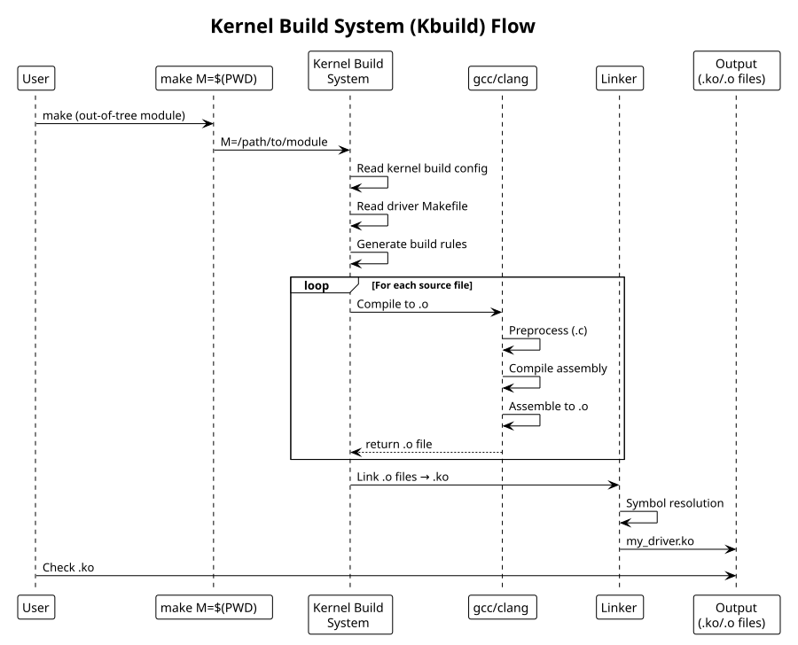

Kernel Build System (Kbuild)
Table of Contents
Kernel build system for drivers: compilation, linking, module objects.
1. Out-of-Tree Module Makefile
Standard pattern for standalone modules:
# Makefile for out-of-tree module
obj-m += my_driver.o
# Multi-file module (if needed)
# my_driver-objs := main.o utils.o
all:
make -C /lib/modules/$(shell uname -r)/build M=$(PWD) modules
clean:
make -C /lib/modules/$(shell uname -r)/build M=$(PWD) clean
install:
make -C /lib/modules/$(shell uname -r)/build M=$(PWD) modules_install
help:
make -C /lib/modules/$(shell uname -r)/build M=$(PWD) help
Key variables:
obj-m- compile as loadable module
obj-y- compile into kernel (for in-tree drivers)
M=$(PWD)- build directory (tells kbuild to build out-of-tree module)
/lib/modules/$(uname -r)/build- kernel source symlink
2. KERNEL_SRC Alternative
For non-standard kernel paths (cross-compile, custom builds):
KERNEL_SRC ?= /path/to/kernel/source
KERNEL_BUILD ?= /path/to/kernel/build # may differ from source
obj-m += my_driver.o
all:
make -C $(KERNEL_BUILD) M=$(PWD) EXTRA_CFLAGS="-I$(PWD)/include" modules
clean:
make -C $(KERNEL_BUILD) M=$(PWD) clean
Use: make KERNEL_SRC=/custom/path KERNEL_BUILD=/custom/build
3. In-Tree Driver Makefile
For drivers in kernel source tree (e.g., drivers/char/Makefile):
# drivers/char/Makefile
obj-y += tty.o mem.o random.o
obj-$(CONFIG_MYDRIVER) += my_driver.o
# Multi-file driver
my_driver-objs := main.o utils.o probe.o
my_driver-$(CONFIG_DEBUG) += debug.o
CONFIG_MYDRIVER is set via menuconfig/defconfig.
4. Multi-File Modules
obj-m += my_driver.o
# Specify object files that compose the module
my_driver-objs := main.o utils.o device.o
# Conditional compilation
my_driver-$(CONFIG_DEBUG_MODE) += debug.o
# Dependencies between objects
$(obj)/main.o: $(obj)/include/generated.h
5. Compiler Flags
ccflags-y += -DDEBUG -Werror
# or per-file:
CFLAGS_main.o := -DDEBUG_LEVEL=2
# Add include paths
ccflags-y += -I$(src)/include
# Cross-compilation
ARCH = arm
CROSS_COMPILE = arm-linux-gnueabihf-
6. Compilation
# Build module
make
# Build with verbose output
make V=1
# Build specific target
make modules
# Clean
make clean
# Show info about current kernel
uname -r
ls /lib/modules/$(uname -r)/build
# Check kernel config
cat /boot/config-$(uname -r)
zcat /proc/config.gz # if CONFIG_IKCONFIG=y
7. Installation
# Install module
sudo make install
# Or manually:
sudo cp my_driver.ko /lib/modules/$(uname -r)/kernel/drivers/
sudo depmod -a
# Load module
sudo modprobe my_driver
# Check loaded modules
lsmod | grep my_driver
dmesg | tail
# Unload
sudo rmmod my_driver
8. Debugging Build
# Show kbuild commands (verbose)
make V=1
# Check what targets are available
make help
# See preprocessor output
gcc -E -I/lib/modules/$(uname -r)/build/include my_driver.c
# Find kernel config
grep CONFIG_DEBUG /boot/config-$(uname -r)
9. Build System Flow

10. See Also
- Kernel Module Fundamentals
- Character Drivers — complete example with build